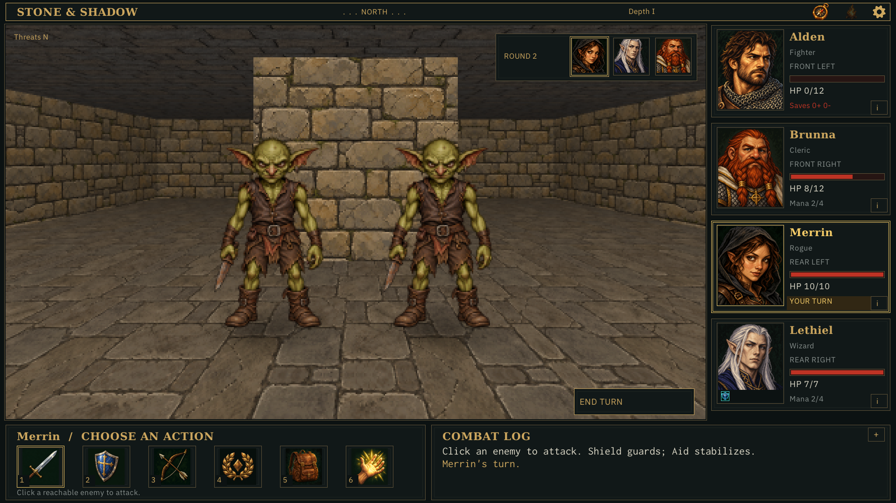
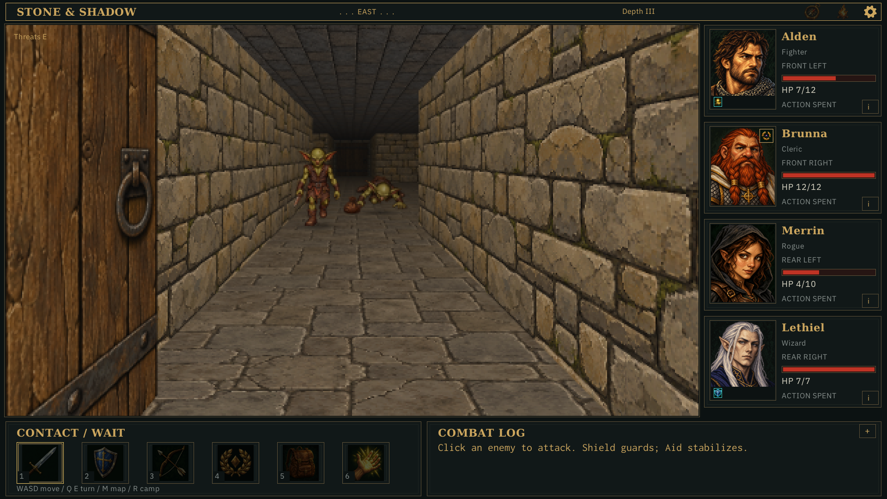
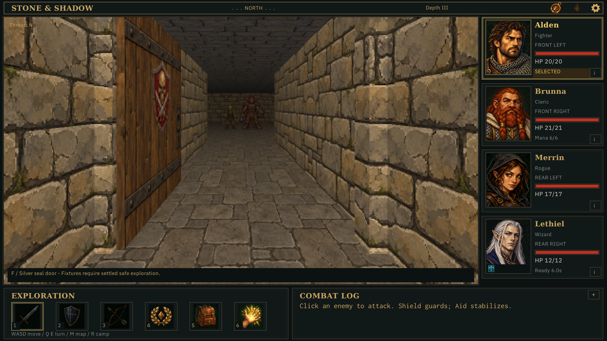
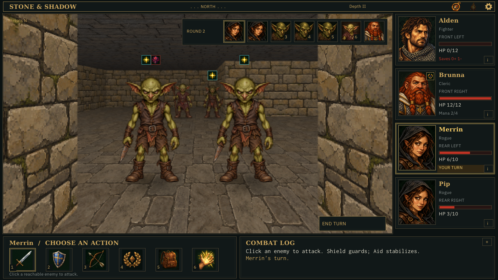
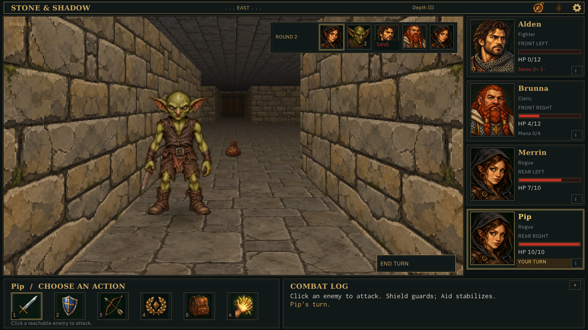
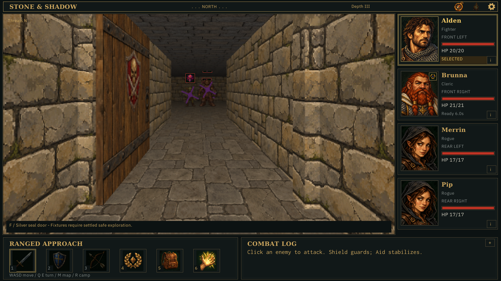
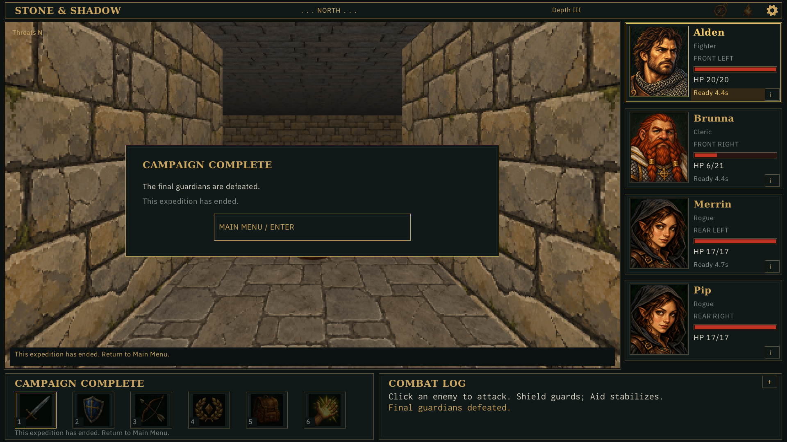

Retained strict-replay captures of actual generated expeditions. Diagnostic control; current-state HUD reconstruction. No desktop input automation.
Costs and limits · Verification







Diagnostic definitions; E entrance, A guardian approach, O objective, B reserve branch. See JSON for doors, keys, route and exact populations.
Full definition and population
#################################### #################################### ###########.....#############...#### ###########.....#############.E.#### ###########..#..#############...#### ###########..B..#############.###### ###########.....#############.....## #############.#################.#### #############.#################.#### #############.#################.#### #############.#################.#### ##...######.....####.....####.....## ##.O.######.....####.....####.....## ##...######..#........+........+..## ##.########..+..####...######.....## ##.....####.....####...######.....## ####.########.#################.#### ####.########.#################.#### ####.########.#################.#### ####.########.#################.#### ##.....#####...##############.....## ##.....####.....#############.....## ##..A........+..#############..#..## ##.....####.....#############..+..## ##.....####....##############.....## #############.#################.#### #############.#################.#### #############.#################.#### #############.#################.#### ###########.....#####...#####.....## ###########..+..####.....####..+..## ###########..#........+........#..## ###########.....####.....####.....## ###########.....#####....####.....## #################################### ####################################
Full definition and population
#################################### #################################### ######.####.....######...####.....## ######.####.....######...####.....## ##...#.......+........+........+..## ##.E.#.####.....####.....######...## ##.....####.....####.....######...## #############.#################.#### #############.#################.#### #############.#################.#### #############.#################.#### ###########.....##############...### ###########.....#############.....## ###########..+..#############..+..## ###########.....#############.....## ###########.....#############....### #############.#################.#### #############.#################.#### #############.#################.#### #############.#################.#### ##.....######...####.....####.....## ##.....######...####.....####.....## ##..B........+........+.......+#..## ##.....####.....####.....####.....## ##.....####.....####.....####.....## ######################.############# ######################.############# ######################.############# ######################.############# ####################.....####.....## ####################.....####.#.O.## ####################..A.......#...## ####################.....####.###### ####################.....####.###### #################################### ####################################
Full definition and population
#################################### #################################### ######.####.....####.....####.....## ######.####.....####.....####.....## ##...#.......+........+.......+#..## ##.E.#.####.....####.....####.....## ##.....####.....####.....####.....## #############.#################.#### #############.#################.#### #############.#################.#### #############.#################.#### ###########...###############.....## ###########...###############.....## ###########..+..#############..+..## ###########.....#############.....## ###########.....#############.....## #############.#################.#### #############.#################.#### #############.#################.#### #############.#################.#### ##.....####.....####.....####.....## ##.....####.....####.....####.....## ##..B........+........#........+..## ##.....####.....####..+..####.....## ##.....####.....####.....####.....## ######################.############# ######################.############# ######################.############# ######################.############# ####################.....####.....## ####################.....####.#.O.## ####################..A.......#...## ####################.....####.###### ####################.....####.###### #################################### ####################################
Full definition and population
#################################### #################################### ###########.....####.....########### ###########.....####.#.O.########### ###########..A.......#...########### ###########.....####.############### ###########.....####.############### #############.###################### #############.###################### #############.###################### #############.###################### ##....######....####....#####.....## ##.....####.....####.....####.....## ##..+........+........+.......B#..## ##.....####.....####.....####.....## ###...######...######...#####.....## ####.#################.############# ####.#################.############# ####.#################.############# ####.#################.############# ##.....#############.....########### ##.....#############.....########### ##..#+.#############.+#..########### ##.....#############.....########### ##.....#############.....########### ####.#################.############# ####.#################.############# ####.#################.############# ####.#################.############# ##.....####.....######...####.....## ##.....####.....######...####.#.E.## ##..+........+........+.......#...## ##.....######...####.....####.###### ##.....######...####.....####.###### #################################### ####################################
Full definition and population
#################################### #################################### ##.....####.....####...############# ##..B..####.....####...############# ##..#........+........+..########### ##.....####...######.....########### ##.....####...######.....########### #############.########.############# #############.########.############# #############.########.############# #############.########.############# ###########.....####.....####.....## ###########.....####..+..####.#.E.## ###########..+..####..#.......#...## ###########.....####.....####.###### ###########.....####.....####.###### #############.########.############# #############.########.############# #############.########.############# #############.########.############# ##.....####.....######...########### ##.....####.....######...########### ##..B........#+.......+..########### ##.....####.....####.....########### ##.....####.....####.....########### ######################.############# ######################.############# ######################.############# ######################.############# ####################.....####.....## ####################.....####.#.O.## ####################..A.......#...## ####################.....####.###### ####################.....####.###### #################################### ####################################
Full definition and population
#################################### #################################### ###########.....####.....########### ###########.....####.#.O.########### ###########..A.......#...########### ###########.....####.############### ###########.....####.############### #############.###################### #############.###################### #############.###################### #############.###################### ###########.....####.....####....### ###########.....####.....####.....## ###########..+.......+#........B..## ###########...######.....####.....## ###########...######.....#####...### #############.########.############# #############.########.############# #############.########.############# #############.########.############# #############...####....#####...#### #############...####.....####...#### ###########..+..####..+........B..## ###########.....####.....####.....## ###########.....#####...#####.....## #############.########.############# #############.########.############# #############.########.############# #############.########.############# ######.######...####.....########### ######.######...####.....########### ##...#.......+........+..########### ##.E.#.####.....####.....########### ##.....####.....####.....########### #################################### ####################################